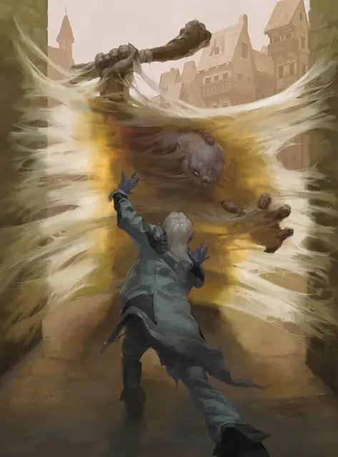

Паутина
Web
2 уровень, Вызов

Время сотворения 1 действие
Дистанция 60 футов
Компоненты В, С, М (кусочек паутины)
Длительность Концентрация, вплоть до 1 часа
Классы Волшебник, Изобретатель, Чародей
Подклассы круг земли (друид), хранитель роя (следопыт)
Вы создаете массу густой и клейкой паутины в точке на ваш выбор в пределах дистанции. Паутина заполняет куб с длиной ребра 20 футов на время длительности заклинания. Паутина является труднопроходимой местностью и слабо заслоняет местность.
Если паутина не прикована к двум прочным структурам (таким как стены или деревья) и не разложена по полу, стене или потолку, созданная паутина опадает сама, и заклинание оканчивается в начале вашего следующего хода. Паутина, разложенная по плоской поверхности, обладает толщиной 5 футов.
Все существа, начинающие ход в паутине, или входящие в неё в свой ход, должны совершать спасбросок Ловкости. При провале существо становится опутанным, пока остается в паутине, или пока не вырвется.
Существо, опутанное паутиной, может действием совершить проверку Силы против Сл ваших заклинаний. В случае успеха оно перестает быть опутанным.
Паутина огнеопасна. Любой 5-футовый куб паутины, соприкоснувшийся с огнём, сгорает за 1 раунд, причиняя 2к4 урона огнём всем существам, начинающим ход в огне.